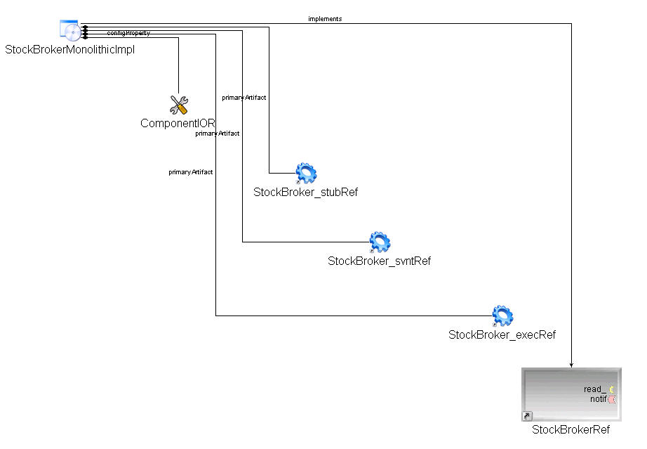
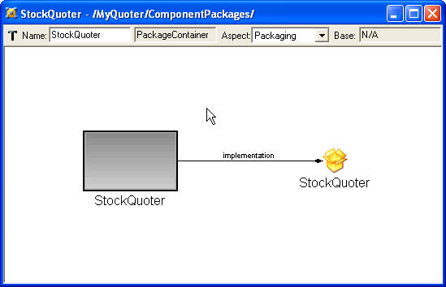
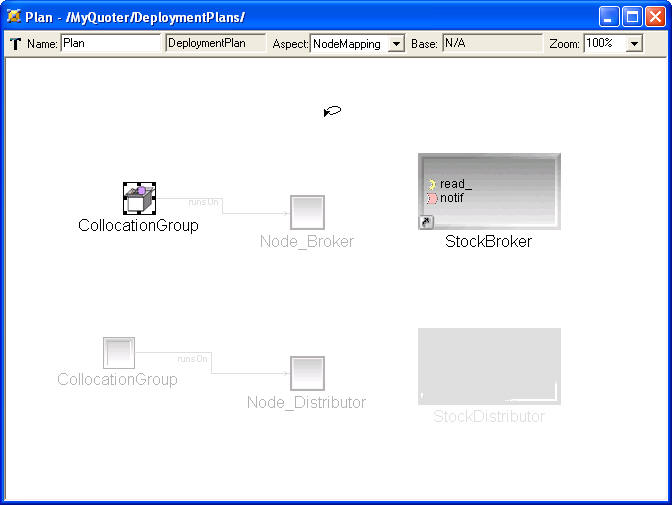

Figure 4.
ComponentImplementation
This folder contains models that describes the implementations of
component interfaces. In the Quoter example, we will have two
monolithic component implementations; respectively StockDistributorImplementation StockBrokerImplementation, and an
assembly
component implementation: StockQuoter,
which is an assembly of StockDistributorImplementation
and StockBrokerImplementaion.
idl_to_picml has created the
monolithic component implementations for us, as shown in figure 5 for
example, but we have to put them together by hand in order to construct
a Quoter system. 
Figure 5
Assembly component is a recursive concept. It provides a boundary for the composition of monolithic components.Assembly component does not provide real implementation for any interface, i.e., it is a virtual component. Modeling an assembly component is different from modeling a monolithic component: you don't need to worry about the artifacts.Instead, you need to create connections between monolithic components so that they can talk via ports. Let's try to assemble the StockQuoter.

Figure 6

Figure 7
ComponentPackage
This folder contains deployable component packages. Every instance in
an assembly should have a corresponding monolithic implementation and
packaged in a ComponentPackagebe To create a package for StockBroker.instance
PackageConfiguration
This folder contains just one model capturing specific configuration of
Component packages.
ToplevelPackage
This folder contains one model capturing information about the
top-level element that will be fed to
the application.
Targets
This folder contains domain-specific models capturing information about
the target
environment in which component-based application will be deployed. In
this Quoter example, we can either deploy the two components into ONE
host, or into TWO different host. We will deploy the Quoter into two
different host.
Now we are ready to deploy our Components to the actual physical environment.
DeploymentPlan
This folder contains a plan model that captures information about the
assignment of component to nodes.

Figure 11
Up to this point, we are basiclly done with the modeling part. Before we generate anything from this model though, please DO remember to check the constraints of the model as we mentioned earlier.
After we are done with the modeling, the flattened_deploymentplan interpreter that comes along with PICML will help us to generate a flattened_deploymentplan.cdp file. Please make sure you generate this file to MyQuoter/descriptors.
Ming Xiong
Last modified:
Figure 5
Assembly component is a recursive concept. It provides a boundary for the composition of monolithic components.Assembly component does not provide real implementation for any interface, i.e., it is a virtual component. Modeling an assembly component is different from modeling a monolithic component: you don't need to worry about the artifacts.Instead, you need to create connections between monolithic components so that they can talk via ports. Let's try to assemble the StockQuoter.
- Right click folder ComponentImplementations,
choose Insert
Model->ComponentImplementationContainer, rename it
as "StockQuoterImplementation" in the Attribute Panel. Double click to
open it.
- From the Part Browser, drag a <<ComponentAssembly>>
to the modeling window,
name it "StockQuoter". Double click to open it.
- Now we will create two instances for interfaces StockBroker and StockDistributor. To do
that, expand the folder
InterfaceDefinitions, then expand theInterfaceDefinitions/Broker, thenInterfaceDefinitions/Broker/Stock until the interface definition of StockBroker shows. While expanding the tree, always keep the "StockQuoter" <<ComponentAssembly>> window open. Then dragMyQuoter/InterfaceDefinitions/Broker/Stock/StockBrokerin the browser to the "StockQuoter" <<ComponentAssembly>> window while pressing ALT key. Repeat the same steps for MyQuoter/InterfaceDefinitions/Distributor/Stock/StockDistributor, and you will see two instances of component interfaces have been created as shown in Figure 6 (the black line in the figure only indicates .mapping)
Figure 6
- Create an <<PublishConnector>>.
- Now assemble the components together according to Figure 1(make sure you change to connect
mode
 ) and
the resulting assembly model should look like Figure 7. Note that to
create connections between
StockDistributor.notify_out and StockBroker.notify_in, you will need
the intermediate connector <<PublishConnector>>.
) and
the resulting assembly model should look like Figure 7. Note that to
create connections between
StockDistributor.notify_out and StockBroker.notify_in, you will need
the intermediate connector <<PublishConnector>>.
{kind=link}
Figure 7
ComponentPackage
This folder contains deployable component packages. Every instance in
an assembly should have a corresponding monolithic implementation and
packaged in a ComponentPackagebe To create a package for StockBroker.instance- Right click folder ComponentPackages
,
insert a <<PackageContainer>>, name it "Broker"; Double
click to open it.
- From the PartBrowser, add the following:
- a <<ComponentPackage>> named "Broker";
- a <<ComponentImplementationReference>> named "Broker";
- a <<ComponentRef>> named "Broker";
- Refer the <<ComponentImplementationReference>> Broker
to
MyQuoter/ComponentImplementations/StockBrokerImplementation/StockBrokerMonolithicImpl. Refer the <<ComponentRef>> Broker toMyQuoter/InterfaceDefinitions/Broker/Stock/StockBroker. To do a refering in GME, simply drage the tree node in the Browser "into" the reference model. For example, you should drage the tree nodeMyQuoter/ComponentImplementations/StockBrokerImplementation/StockBrokerMonolithicImpl into <<ComponentImplementationReference>> Broker.Check GME manual(tutorials) for more information. - Switch to Connect Mode and create two connections according to
the following relationship.
- <<ComponentImplementationReference>> Broker implements <<ComponentPackage>> Broker;
- <<ComponentPackage>> Broker realizes <<ComponentRef>> Broker.
The model you built should resemble Figure 8.

Figure 8
Now create a ComponentPackage/StockDistributor following the same steps.
We will also need to create a package
for the assembly component
StockQuoter. Remember assembly component is a virtual component, it
does not "realize" a certain interface, so different from the Broker
and Distributor packages, the
StockQuoter does not need a <<ComponentRef>>. To create
this model:

Figure 9
Figure 9
PackageConfiguration
This folder contains just one model capturing specific configuration of
Component packages. - In the folder PackageConfiguration,
and create a
<<PackageConfigurationContainer>>, name it "Default", click
to
open it.
- Add a <<PackageConfiguration>> named "default" and a
<<ComponentPackageReference>>, name it "StockQuoter",
connect "Default" to "StockQuoter"
- Refer <<ComponentPackageReference>> StockQuoter to
<<ComponentPackage>>
MyQuoter/ComponentPackage/StockQuoter/StockQuoter
(Not <<ComponentImplementationReference>>MyQuoter/ComponentPackage/StockQuoter/StockQuoter!)
ToplevelPackage
This folder contains one model capturing information about the
top-level element that will be fed to
the application. - In the folder ToplevelPackage,
and create a
<<ToplevelPackageContainer>>, name it "Default", double
click to open it.
- Add a <<ToplevelPackage>> named "ToplevelPackage"
and a <<PackageConfigurationReference>>, name it "Default",
connect "ToplevelPackage" to "Default"
- Refer "Default" to My
Quoter/PackageConfiguration/Default/Default
Targets
This folder contains domain-specific models capturing information about
the target
environment in which component-based application will be deployed. In
this Quoter example, we can either deploy the two components into ONE
host, or into TWO different host. We will deploy the Quoter into two
different host. - In the folder Targets,
insert a new <<Domain>> named "Domain"; double click to
open it.
- From the Part Browser, add two <<Node>> named
"Broker" and "Distributor" respectively.
Now we are ready to deploy our Components to the actual physical environment.
DeploymentPlan
This folder contains a plan model that captures information about the
assignment of component to nodes. - In the folder DeploymentPlan,
insert a model
<<DeploymentPlan>>; name it "Plan", click to open it
- From the PartBrowser, add the following:
- Two <<CollocationGroup>>
- Two <<NodeReference>> named "Node_Broker" and
"Node_Distributor" respectively, refering to
MyQuoter/Targets/Domain/BrokerandMyQuoter/Targets/Domain/Distributorrespectively - Two <<ComponentRef>> named "StockBroker" and
"StockDistributor" respectively, refering to
MyQuoter/ComponentImplementations/StockQuoterImplementation/StockQuoter/StockBrokerandMyQuoter/ComponentImplementations/StockQuoterImplementation/StockQuoter/StockDistributorrespectively. Note that the <<ComponentRef>> in DeploymentPlan is not refering to the interface, but rather, the actual instance of the implementation.
- Switch to Connect Mode, connect one
<<CollocationGroup>> to <<NodeReference>> Node_Broker,
connect another
<<CollocationGroup>> to <<NodeReference>> Node_Distributor.
Now the model looks like the following.

Figure 10.
- Now we need to associate <<ComponentRef>>
StockBroker to the
<<CollocationGroup>> running on the
<<NodeReference>> Broker, and <<ComponentRef>>
StockDistributor to the <<CollocationGroup>> running on the
<<NodeReference>> Distributor. To do that, switch the Edit
Mode Bar to Set Mode (
 ), and move
the cursor to the <<CollocationGroup>> running on
<<NodeReference>> Distributor, right-click on it. You will
find the cursor is changed to set mode cursor, and only the
<<CollocationGroup>> you clicked in is highlighted, as
shown
in Figure 11.
), and move
the cursor to the <<CollocationGroup>> running on
<<NodeReference>> Distributor, right-click on it. You will
find the cursor is changed to set mode cursor, and only the
<<CollocationGroup>> you clicked in is highlighted, as
shown
in Figure 11.
Figure 11
Now move your cursor to
<<ComponentRef>> StockDistributor, and left-click it,
so that it looks like Figure 12.

Figure 12
Figure 12
This operation
associates StockDistributor component to the
<<CollocationGroup>> running on Distributor node.
To do the same with
Broker, just right-click on another <<CollocationGroup>>,
and left-click on StockBroker <<CollocationGroup>> which is
highlighted.
Up to this point, we are basiclly done with the modeling part. Before we generate anything from this model though, please DO remember to check the constraints of the model as we mentioned earlier.
After we are done with the modeling, the flattened_deploymentplan interpreter that comes along with PICML will help us to generate a flattened_deploymentplan.cdp file. Please make sure you generate this file to MyQuoter/descriptors.
Ming Xiong
Last modified: